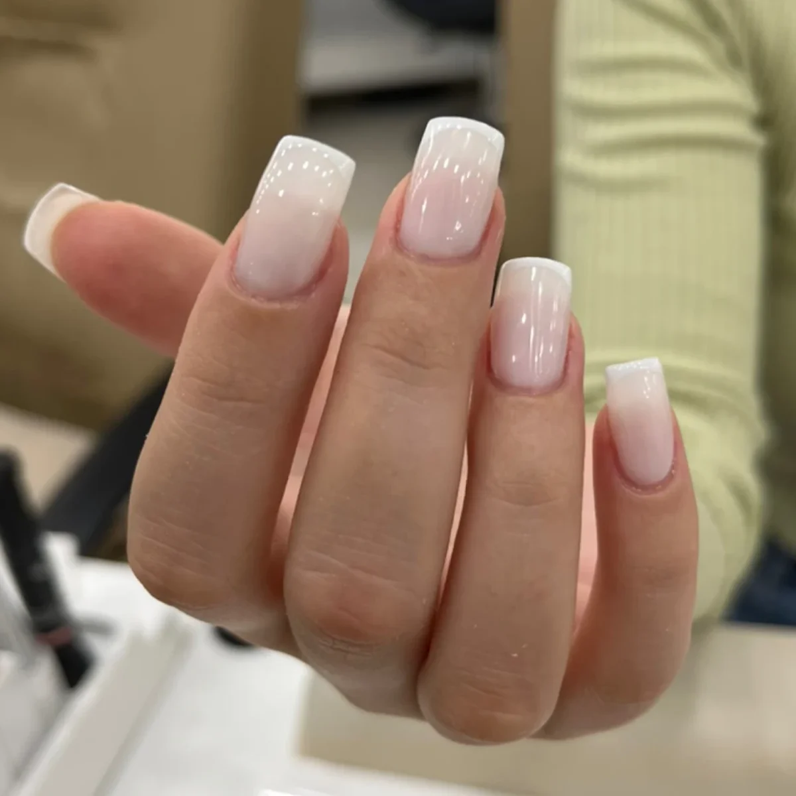

Semi-permanent, gel, résine : et si on regardait d’abord vos mains ?
Par 36 Beauté · Novembre 2026 · 3 min de lecture
« Je voudrais du gel. » Très bien. Mais vos ongles sont-ils cassants, ou est-ce que vous voulez simplement qu’ils tiennent jusqu’aux vacances ? Ce n’est pas du tout la même demande.
Ces trois mots sont souvent employés l’un pour l’autre. Ils désignent pourtant des gestes différents, et le meilleur choix dépend moins de la tendance que de votre vie : clavier, vaisselle, enfants, sport, ou tout ça le même jour.
Le semi-permanent : votre ongle, en plus solide côté couleur
C’est un vernis qui durcit sous une lampe. Il ne rallonge rien. Vous gardez vos ongles, à leur longueur, avec une couleur qui ne s’écaille pas au premier trousseau de clés. Il tient généralement deux à trois semaines, puis la repousse se voit.
C’est le bon choix si vos ongles sont déjà en assez bon état et que vous voulez surtout oublier le vernis pendant un moment.
Le gel : de la matière, avec de la souplesse
Le gel construit. Il renforce un ongle fragile ou lui donne de la longueur, et il durcit lui aussi à la lampe. Le résultat est lisse et plutôt léger au doigt. Il plaît aux personnes qui veulent une main soignée sans avoir l’impression de porter quelque chose.
La résine : la plus costaude de la bande
Une poudre, un liquide, et une matière que la prothésiste sculpte avant qu’elle ne durcisse à l’air. Si vous cassez un ongle par semaine, ou si vous rêvez d’une longueur franche, c’est souvent vers elle qu’on regarde. L’odeur pendant la pose est plus marquée, autant le savoir.
Les prix, sans détour
| Pour les mains | Tarif |
|---|---|
| Vernis semi-permanent | 25 € |
| Manucure + semi-permanent | 35 € |
| Pose gel ou résine + vernis simple | 30 € |
| Pose gel ou résine + semi-permanent | 50 € |
| Remplissage + semi-permanent | 40 € |
Non, vos ongles n’ont pas besoin de « respirer »
On l’entend partout, et l’idée est tenace. L’ongle est fait de kératine : il ne respire pas, et ce qui le nourrit arrive par le sang, sous la matrice, là où il se forme. Si vos ongles paraissent fins et mous après une pose, le coupable est plutôt ailleurs : un limage trop appuyé, une dépose arrachée, un dessèchement.
Faire une pause entre deux poses reste une bonne idée si vous en avez envie, ou si vos ongles sont abîmés. Mais pour les bonnes raisons : les laisser se réhydrater et repousser tranquillement. Quelques gouttes d’huile font plus de bien que le grand air.
Ce qui compte vraiment, c’est la façon dont une pose commence et dont elle se termine. Une préparation douce au début, une dépose sans forcer à la fin. Entre les deux, vous pouvez vivre normalement.
Trois questions avant de réserver
- Vos ongles cassent-ils souvent ? Si oui, pensez gel ou résine. Si non, le semi-permanent suffit peut-être.
- Voulez-vous de la longueur ? Le semi-permanent n’en ajoute pas.
- Reviendrez-vous dans trois ou quatre semaines ? Une pose se suit : gel et résine demandent un remplissage quand l’ongle a poussé.
Vous hésitez encore ? C’est normal, et ça se règle en deux minutes au salon, ongles sous les yeux. Ce sera toujours plus fiable qu’un article, même celui-ci.
On s’occupe de vos ongles ?
Prestation et créneau se choisissent sur notre page Planity.
Réserver en ligne